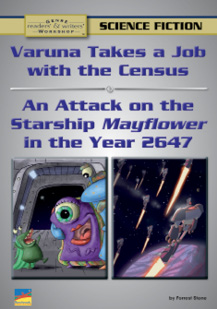

Related Resources
Text-Dependent Comprehension
Teacher’s Guide
These interactive resources are available through a subscription to benchmarkuniverse.com.
Lexile® 1020L
Varuna Takes a Job with the Census;
An Attack on the Starship Mayflower in the Year 2647
ELA Strategies and Skills
Text-Dependent Comprehension Strategies
Extend Language Knowledge
Vocabulary Strategies
Vocabulary List
* General academic word
** Domain-specific word
|
What Makes This Text Complex? |
|
|
Purpose and Levels of Meaning 3 |
Themes are multi-dimensional and require readers to make inferences about characters and plot events. (pp. 2–12)* |
|
Structure 4 |
The book includes multiple sections, including genre information, historical background, fiction, analysis, and procedural text. (pp. 2–9)* |
|
Language Conventionality and Clarity 3 |
Extensive use of scientific terminology related to space science and futuristic worlds and frequent heterographs make this text challenging within its complexity band. (pp. 10–11)* |
|
Knowledge Demands 3 |
Readers might be unfamiliar with some of the challenging earth and physical science concepts and the futuristic situations they encounter. |
Qualitative text complexity dimensions from the CCSS are scored on the following scale: 1–Low; 2–Middle Low; 3-Middle High; 4–High
* Citations refer to pages within this teacher’s guide that address the specific text complexity
LEXILE® is a trademark of MetaMetrics, Inc., and is registered in the United States and abroad.
Common Core Standards © Copyright 2010. National Governors Association Center for Best Practices and Council of Chief State School Officers. All rights reserved.
© Benchmark Education Company, LLC. All rights reserved. Teachers may photocopy the reproducible pages for classroom use. No other part of the guide may be reproduced or transmitted in whole or in part in any form or by any means, electronic or mechanical, including photocopy, recording, or any information storage or retrieval system, without permission in writing from the publisher.
Science Fiction
Scaffolded Preview for ELs and Struggling Readers
Support students to access the text by orally introducing academic vocabulary, language structures, and concepts.
Pages 8–9: This science fiction story has some imaginative beings called “Plynchins.” Plynchins can listen to thoughts, have hair that is always moving, and have a self-contained ecosystem, which means they can live anywhere. Look at our main character, Varuna, on page 8. The story also has creatures and planetary bodies that speak. Look at the illustration on page 8. What will help Varuna? It’s an Onglantichi, a popular toy among teenagers.
Page 10: Varuna starts a new job with the census and has to count all beings. Let’s find the word bouillon. Bouillon is in bold print so we can look it up in the glossary. (Do so.) Now find the word bouillon and look it up in the glossary. What does “from primordial bouillon to population bouillon” mean?
First Read
Varuna Takes a Job with the Census; An Attack on the Starship Mayflower in the Year 2647 Teacher’s Guide
Read Varuna Takes a Job with the Census
RL.6.2
Preview Book
Invite students to read the story titles and study the illustrations on the cover. Invite a volunteer to read aloud the book description on the back cover. Review that stories of the same genre share certain characteristics, or features. Ask students to turn to pages 2–3, and invite volunteers to read the questions and answers about science fiction. Then read and discuss the “Features of Science Fiction” web. Ask students to turn to pages 5–7. Explain that two different scientific stories are in this book. Together, read about the kinds of science fiction stories.
If your students need more support, use the Scaffolded Preview provided.
Set a Purpose
Say: We know that science fiction includes key story elements, such as characters and a problem to solve. As you read Varuna Takes a Job with the Census, use self-stick notes to identify the characters and setting and to flag the main events.
Choose the reading option that best meets your students’ needs.
Summarize Key Story Elements: Think and Write Together
Invite students to state the story elements in Varuna Takes a Job with the Census. As a group, create a Key Story Elements chart. Then, as a group, construct a summary of the story. If students need more support, use the lesson.
|
Characters |
Setting |
|
Varuna, Gphimpy, planet Earth |
Seraphim galaxy; Universe Central |
|
Main Events
|
|
Sample Key Story Elements Chart
© Benchmark Education Company, LLC
Lesson: Distinguish Interesting Details from Important Details
Explain that when readers summarize, they include only the most important details from the text. Have students turn to page 9. Reread the first two paragraphs together.
Say: Let’s identify the most important details in this paragraph. It is important to understand that Varuna is a Plynchin and is starting her first job—counting sentient beings. These details explain the story problem.
Ask students to describe Varuna’s ecosystem.
Say: These details are interesting! They help us visualize how Varuna can go anywhere in the universe. But would the story still make sense without these details? Yes. The details are not important enough to include in a summary.
Pair students and have them write a summary of the science fiction story.
Summarize Key Details: Think/Pair/Write/Share
Bring students together and ask several pairs to read their summaries aloud. As a group, evaluate the summaries and identify any key details that were omitted or extraneous. Then write a group summary of Varuna Takes a Job with the Census. If time allows, invite students to discuss the “Analyze the Characters and Plot” questions on page 16. Finally, ask students to turn back to the “Features of Science Fiction” web on page 3 and, with a partner, discuss which features apply to this story and how.
|
In the Seraphim Galaxy, Varuna, a Plynchin, starts a new job counting sentient beings for the census. She meets her boss, Gphimpy, and then gets started. Varuna discovers new races of sentient beings and interviews planet Earth, whose beings became extinct. Varuna leaves her toy Onglantichi behind while working, but her boss returns it to her and tells her that she did a great job on her first day. |
Sample Group Summary
© Benchmark Education Company, LLC
Varuna Takes a Job with the Census; An Attack on the Starship Mayflower in the Year 2647 Teacher’s Guide
First Read
Scaffolded Preview for ELs and Struggling Readers
Support students to access the text by orally introducing academic vocabulary, language structures, and concepts.
Pages 18–19: The illustration introduces us to our main characters, brother and sister, Ace and Helvetica. Can you find Ace, sitting by himself? What does this tell us about their relationship?
Page 20: The author has included many futuristic details for the setting. Read this paragraph. Where is the Mayflower now?
First Read
Varuna Takes a Job with the Census; An Attack on the Starship Mayflower in the Year 2647 Teacher’s Guide
Read An Attack on the Mayflower in the Year 2647, pages 18–22
RL.6.2
Set a Purpose
Say: As you read pages 18–22 of An Attack on the Starship Mayflower in the Year 2647, use self-stick notes to flag key story elements—characters, setting, and main events.
Choose the reading option that best meets your students’ needs. If students need more support to access the text, use the Scaffolded Preview provided.
Summarize Key Story Elements: Think and Write Independently
Invite students to share with a partner what they noted in the text. Have them collaborate to create a new Story Elements chart for pages 18–22 of An Attack on the Starship Mayflower in the Year 2647.
|
Characters |
Settings |
|
Ace, Helvetica, Captain Trace |
On the Starship Mayflower in 2647 |
|
Main Events
|
|
Sample Key Story Elements Chart
Next, have pairs collaborate to write their own summary of An Attack on the Starship Mayflower in the Year 2647. If students need more support in deciding what to include in a summary, refer back to the lesson strategy taught in Part 1. Bring students together and ask several pairs to read their summaries aloud. As a group, evaluate the summaries and identify any key details that were omitted. Then work as a group to construct a
written summary of the first half of the story.
|
Ace is jealous of his sister Helvetica’s heroic stories. That night, the Mayflower is attacked. Helvetica and Captain Trace put on their battle armor and prepare to defend their home. Ace is too young to fight, so he joins the other children and people who cannot go into battle. It is one of the worst attacks on the Mayflower that Ace has seen. |
Sample Summary
© Benchmark Education Company, LLC
Read An Attack on the Mayflower in the Year 2647, pages 23–27
RL.6.2
Set a Purpose
Say: As you read pages 23–27 of An Attack on the Starship Mayflower in the Year 2647, continue to use self-stick notes to flag characters, setting, and main events. Notice that in this story, the author adds annotations, or notes, in the margins to explain the features of science fiction. These notes help us better understand the genre both as a reader and as a writer.
Choose the reading option that best meets your students’ needs. If student need more support to access the text, use the Scaffolded Preview provided.
Summarize Story Elements: Think and Write Independently
Ask students to review the key story elements they flagged in the first half of An Attack on the Starship Mayflower in the Year 2647. Have them independently create a Story Elements chart for the second half, like the ones they completed in the previous two readings. Then have them write their own summary of the second half of the story.
|
Characters |
Settings |
|
Ace, Helvetica, Captain Trace |
On the Starship Mayflower in 2647 |
|
Main Events
|
|
Sample Key Story Elements Chart
Bring students together and ask volunteers to read their summaries aloud. As a group, evaluate the summaries.
|
Ace realizes something important about the attack. He finds a battle suit in his size and ejects himself from the starship. Ace tells his father that they are being attacked by robots that are defending a planet. Captain Trace orders the starship’s computer to be reprogrammed, saving the ship. Ace becomes a hero, and his sister has to listen to his heroic stories. |
Sample Summary
© Benchmark Education Company, LLC
Varuna Takes a Job with the Census; An Attack on the Starship Mayflower in the Year 2647 Teacher’s Guide
First Read
Scaffolded Preview for ELs and Struggling Readers
Support students to access the text by orally introducing academic vocabulary, language structures, and concepts.
Page 21: Berth is a boldfaced word, so let’s look it up in the thesaurus. (Do so.) How would the Mayflower enter a new berth?
Routine for Finding Text Evidence
|
“‘Last time, that was about eighty billion beings, so you’d better get cracking! … You just wasted 1.7 seconds. That’s the first few million beings you could have interviewed,’ Gphimpy barks, mentally.” (p. 10) |
|
t |
|
“‘Don’t worry about it. … By the way, your Onglantichi did bring good luck to that ammonia cloud. It managed to slip away from that runaway star and is happily floating around a very nice-looking planet. If the right combination of meteorites passes through it, there may be a whole race of little ammonia creatures to count during the next Census!’” (p. 15) |
|
“So he shuffled his feet and shrugged. ‘Just tired,’ Ace answered.” (p. 19) |
|
t |
|
“‘So, one of the first evidence was they went after the agricultural wing right away—and plants can’t shoot at you. So I was thinking, why would an attacker hit your farm first?’” (p. 27) |
Sample Analyze Scenes
Graphic Organizer
Close Reading and Analysis
Varuna Takes a Job with the Census; An Attack on the Starship Mayflower in the Year 2647 Teacher’s Guide
Close Reading Option 1: Explain How an Author Develops Point of View
RL.6.3, RL.6.6
Model Finding Text Evidence
Display and read aloud the close reading question: How does the author use dialogue to develop Gphimpy’s character throughout the story?
Explain that the question asks readers to find evidence that will tell about Gphimpy’s character traits and how they change. First, you need to find the place in the text where Gphimpy is introduced and see what his character is like in the beginning of the story.
Say: First I will read the dialogue on page 10.
Reread page 10.
Say: Gphimpy says “You’d better get cracking,” and he also tells Varuna that she has just wasted 1.7 seconds. This tells me that he is a demanding boss and not in a very good mood. The author’s use of the word “barks” also tells me that he says this in a harsh tone, so I can tell that he is grumpy.
Display a blank Text Evidence chart and model how you record the text evidence.
Support Practice
Ask students to turn to a partner, read the first paragraph on page 15, and read Gphimpy’s dialogue. Tell students to think about how Gphimpy sounds in this part of the story, and compare it to how he talks in the beginning of the story. Remind students to stay on topic, build on each other’s ideas, and ask questions to clarify each other’s thoughts.
Bring students together and ask several pairs to share the text evidence they found and describe how it helps them understand Gphimpy’s character. Students should be able to explain that the author uses dialogue to show that Gphimpy has become more pleasant and is happy with Varuna’s work.
Find Text Evidence Independently
Ask students to reread page 19 and page 27 independently and locate evidence to show how the author uses dialogue to show that Ace has changed over the course of the story. (First Ace sounds unsure of himself and doesn’t have a lot of confidence. At the end of the story Ace is showing off to the other kids about his own heroic adventure.)
Discuss how this close reading has helped students better understand how to draw a conclusion based on evidence in a story.
© Benchmark Education Company, LLC
Close Reading Option 2: Analyze Scenes
RL.6.1, RL.6.5
Model Finding Text Evidence
Display and read aloud the close reading prompt: Analyze how Ace’s thoughts or actions set events in motion in An Attack on the Starship Mayflower in the Year 2647.
Explain that this question asks readers to find evidence that shows how Ace’s words or actions affect the plot of An Attack on the Starship Mayflower in the Year 2647.
Say: First I need to look for evidence toward the beginning of the story.
Reread pages 8 and 9.
Say: Here I read that Ace is sick of hearing about his sister’s heroic adventures. He feels that he can’t live up to her achievements, or their father’s. He isn’t an athlete, and he prefers designing adventure-simulation games.
Display a blank graphic organizer and model how you record the text evidence.
Support Practice
Display another reading prompt for students to read aloud: Analyze how Ace’s words or actions set events in motion on page 19. Ask students to turn to a partner, read pages 24–25, and analyze text evidence that shows how Atlas’s words or actions set events in motion. Remind students to stay on topic, build on each other’s ideas, and ask questions to clarify each other’s thoughts.
Bring students together and ask several pairs to share their text evidence and analysis. Students should be able to explain that Ace’s knowledge of computers helped him understand the situation and come up with a plan to save the starship.
Find Text Evidence Independently
Ask students to reread pages 26 and 27 independently and locate text evidence in this story that shows how Ace’s thoughts or actions set events in motion.
Discuss how this close reading helps readers analyze the connection between characters and plot.
© Benchmark Education Company, LLC
Varuna Takes a Job with the Census; An Attack on the Starship Mayflower in the Year 2647 Teacher’s Guide
Close Reading and Analysis
|
Text Evidence |
|
“Ace had heard this story about nine thousand times, and he was sick of it. The amazing Helvetica Trace was, unfortunately, his big sister.” (p. 18) |
|
“Ace knew he could never do anything more amazing than his sister or his father had already done. He was not an incredible athlete like Helvetica. He couldn’t crawl through four miles of ship’s ductwork, though it sounded like the setting for an adventure-simulation game he might design.” (p. 19) |
|
“Ace blurted out as soon as he materialized: “Dad! They’ve got to be robots!’” (p. 24) |
|
“Captain Trace immediately knew what Ace was thinking, perhaps from having played many of the sly sim games Ace had created.” (p. 25) |
|
t |
|
“With the help of the now-friendly robot army, the Mayflower’s computers located Urn-ka-chee, and Captain Trace decided to explore the planet briefly before moving on. He transported down with the usual crew of guards and scientists, but he also included Helvetica and, for the first time, Ace, in the landing party.” (p. 26) |
|
“Helvetica had heard this story about three dozen times, now that Ace—her kid brother—was a big hero . . . and the story got better every time!” (p. 27) |
Sample Analyze Scenes
Graphic Organizer
Close Reading and Analysis
|
Text Evidence |
|
“She had been a hero since the age of fifteen when she was the key in defeating the Plork, a race of intergalactic pirates. Now, at eighteen, she was the top cadet in her class. Even worse, Ace’s father was the legendary Hank Trace, the most famous starship captain in history. Ace knew he could never do anything more amazing than his sister or his father had already done.” (p. 19) |
|
“Captain Hank Trace was the leader of this flying city traveling faster than the speed of light. It was a hectic, frantic, frazzling job. He knew his kids would like to have more of his time—Mrs. Trace had perished in the attack of the Plork. The Mayflower’s mission was too difficult and too serious for Hank Trace to ever feel good about taking time off from being the captain. But he also felt bad about not spending more time being Helvetica and Ace’s dad.” (p. 21) |
|
“‘Since when is a cadet supposed to ignore a red alert, Captain?’ said Helvetica. ‘Ignoring is one thing—the time grenade is another,’ he replied.” “‘Captain Trace, I see you just included a time grenade in your gear,’ Helvetica said. Dad Trace smiled. ‘Well, you can’t be too careful.’” (p. 22) |
Sample Determine Theme Graphic Organizer
Varuna Takes a Job with the Census; An Attack on the Starship Mayflower in the Year 2647 Teacher’s Guide
Close Reading Option 3: Determine a Theme
RL.6.1, RL.6.2
Model Finding Text Evidence
Display and read aloud the close reading prompt: Identify details that convey a theme on page 19 of An Attack on the Starship Mayflower in the Year 2647.
Explain that this question asks readers to find text evidence that suggests the central idea that readers can find in the story.
Say: First I want to find details about Ace’s character that I recall from the beginning of the story.
Reread the first paragraph on page 19.
Say: This says that Ace feels that he can’t live up to his sister’s and father’s heroic achievements.
Record the evidence on a blank graphic organizer.
Support Practice
Ask students to turn to a partner, reread page 21, and identify details that convey a theme of An Attack on the Starship Mayflower in the Year 2647. Remind students to stay on topic, build on each other’s ideas, and ask questions to clarify each other’s thoughts.
Bring students together to share their supporting text evidence and their ideas about the theme of the legend. Students should be able to explain that Captain Hank Trace also has complicated feelings about how he relates to his family. He works hard and knows his job is important, but he also wishes that he could spend more time with his children.
Find Text Evidence Independently
Ask students to reread the dialogue between Captain Trace and Helvetica on pages 21 and 22 independently and identify text evidence that helps them confirm or revise their ideas about the theme of An Attack on the Starship Mayflower in the Year 2647. (They are arguing, but Captain Trace is not really angry with his daughter. He wants her to be safe, but he is also proud of her.)
Discuss how this close reading helps readers determine how a theme is conveyed through particular details
© Benchmark Education Company, LLC
Close Reading Option 4: Draw Inferences
RL.6.1
Model Finding Text Evidence
Distribute the graphic organizer BLM on the back cover of this guide. Explain that literary texts, including science fiction, have evidence in which the reader must make inferences—guessing what is happening through details the author provides. Tell students that today they will use the chart to identify text evidence that helps point out inferences in each science fiction story they read this week. Then support students to turn to the first story.
Say: On page 10 we learn that Gphimpy delivers all of Varuna’s training by mind merge. From this detail, we can infer that mind merge is a process in which one being transfers knowledge to another without spoken or written communication. The author doesn’t say this directly; instead, he supplies the details we need to figure it out on our own. On page 12, Varuna nourishes herself by drawing some energy from a nearby star. We can infer that Plynchins don’t eat food. On page 13, one planet Varuna interviews had huge creatures that ate tons of vegetation or other huge animals. These creatures went extinct. We can infer the creatures were dinosaurs, and the planet was Earth.
Record this text evidence in the right column of the chart.
Support Practice
Ask students to work with a partner to locate two more inferences on page 19 in An Attack on the Starship Mayflower in the Year 2647. Remind them to stay on topic, build on each other’s ideas, and ask questions to clarify each other’s thoughts.
Bring students together and ask several pairs to share their text evidence and inference. Students should include story details such as: Crawling through four miles of the ship’s ductwork sounds like a computer simulation game Ace might design. (p. 19) We can infer that Ace is intelligent and creative with excellent computer skills. At the bottom of the page it says, “walking used up oxygen and nutrients, and those had to be budgeted.” We can infer that the starship inhabitants have not been able to exactly duplicate Earth’s system for supporting life. Record the information on the right column of the BLM chart.
Find Text Evidence Independently
Ask students to reread An Attack on the Starship Mayflower in the Year 2647 independently to locate text evidence of another inference. (Possible inference: On page 26 Captain Trace takes Ace on the trip to explore Urn-ka-chee. We can infer that Ace will have more privileges now that he has helped stop the attack.) Record the text evidence on the right side of the BLM chart.
© Benchmark Education Company, LLC
Varuna Takes a Job with the Census; An Attack on the Starship Mayflower in the Year 2647 Teacher’s Guide
Close Reading and Analysis
Close Reading Option 5: Answering Text Evidence Questions RL.6.1, RL.6.3, RL.6.4
Use these questions to extend close reading or challenge students who do not need modeling or support practice.
Identify Cause and Effect
Question: What was the effect of Varuna thinking about her excitement over her first job?
Answer: She wasted 1.7 seconds, and the first few million beings she could have interviewed.
Text Evidence: “‘My first job!’ exclaims Varuna, too excited not to say it out loud in her own language. ‘You just wasted 1.7 seconds. That’s the first few million beings you could have interviewed,’ Gphimpy barks mentally.”(p. 10)
Determine the Meaning of Words and Phrases
Question: The word sentient is used throughout the first story. Reread the first two lines on page 10 and the last two lines on page 10. What does sentient mean? What evidence help the reader define the word?
Definition: conscious, characterized by the senses
Text Evidence: “Gphimpy explains to Varuna that her job is to find every sentient being.” (p. 10) “With great delight, Varuna discovers dozens of new sentient races!”(p. 10)
Extend Meaning
Varuna Takes a Job with the Census; An Attack on the Starship Mayflower in the Year 2647 Teacher’s Guide
Build Language, Vocabulary, and Comprehension
L.6.1b, L.6.5a, L.6.6
Use Reflexive Pronouns
Explain that a reflexive pronoun is a word such as herself, myself, or itself that we use to refer to the subject of the sentence. For example, “I bought myself a pepperoni pizza.”
Ask students to read the last paragraph on page 9 and talk with a partner to identify the reflexive pronoun. (Varuna finds herself in a smelly methane swamp…”) Have students tell what this reflexive pronoun refers to. (Varuna)
Vocabulary Strategies: Identify Onomatopoeia
Together, read the “Tools Writer Use” section on page 4.
Say: The science fiction we read includes onomatopoeia. Onomatopoeia suggests or imitates the sound an object makes. Writers use onomatopoeia to appeal to readers’ sense of hearing and make the plot more vivid and realistic. For example, “The horses in the parade clip-clopped down the street.” This is more vivid than if I say, “The horses in the parade walked down the street.”
Model how to identify onomatopoeia by answering the “Analyze the Tools Writers Use” questions on page 17, asking students to locate each piece of onomatopoeia as you reference it in the text. Support practice by asking students to assist you in identifying the examples of onomatopoeia listed on page 17.
Say: With a partner, answer the “Analyze the Tools Writer Use” questions on page 29, referring back to An Attack on the Starship Mayflower in the Year 2647. Invite students to begin collecting examples of onomatopoeia from their independent reading. Provide a large sheet of chart paper on which students can record their examples, and periodically review them as a class.
Practice Academic Vocabulary
Remind students that one type of context clues is heterographs, words that are pronounced the same but are spelled differently and have different meanings. Sometimes readers can figure out the meaning of an unfamiliar word by looking for heterographs in the text. Direct students to the “Focus on Words: Heterographs” activities on pages 4, 17, and 29. Ask them to copy the charts on a sheet of paper to complete with a partner. Explain that they should read the sentences around the boldfaced word to find a heterograph that helps define the word. Readers should beware of the different meanings and spellings. Partners should be able to explain how they know that the words are heterographs.
© Benchmark Education Company, LLC
Reading, Writing, Speaking, and Listening
RL.6.9, W.6.3, W.6.7, W.6.8, W.6.9a, W.6.10
Practice Finding Text Evidence
Have students reread the text to find evidence to answer the questions on the Text Evidence Question Card.
Write to Sources: Narrative Text
Tell students they will write their own science fiction using the stories they read this week as models. Assist students through the step-by-step process detailed on pages 30–31, encouraging them to refer back to the “Features of Science Fiction” web on page 3 as well. Confer with individual students as they write. For example, did the student include an element based on scientific fact? Base the story on a futuristic, fantastic, or realistic setting? Use a theme of aliens, parallel universes, space and time travel, or inventions that go out of control?
Make Connections Across Texts
Say: Good readers think about how literary works are related. We know, for example, that both of these science fiction stories share certain features. They both have futuristic settings. They both have elements that are based on scientific fact. What else do they have in common? Today we will think about the elements in both stories and what we can learn from them.
Ask students to copy the “Make Connections Across Texts” chart on the inside back cover of their books on a sheet of paper to complete individually, with a partner, or in a small group. Then bring students together to share and synthesize their ideas.
Collaborative Research
Divide the class into three groups. Have each group conduct collaborative research on one of the early authors of science fiction highlighted on page 3—Jonathan Swift, H. G. Wells, or Jules Verne. Students should use print and digital resources to research how science and technology were used and then write and publish their reports. If time allows, invite each group to present its report to the class.
© Benchmark Education Company, LLC
Varuna Takes a Job with the Census; An Attack on the Starship Mayflower in the Year 2647 Teacher’s Guide
Independent and
Collaborative Learning
Interactive Activities
Visit benchmarkuniverse.com for additional interactive learning activities.
Comprehension: Use Inference
Summarize Conclusions
Directions: Complete the graphic organizer below to help you analyze the theme of each
trickster tale.
|
Science Fiction Story |
Evidence |
Inference |
|
Varuna Takes a Job with the Census |
||
|
Varuna Takes a Job with the Census |
||
|
Varuna Takes a Job with the Census |
||
|
An Attack on the |
||
|
An Attack on the |
||
|
An Attack on the |